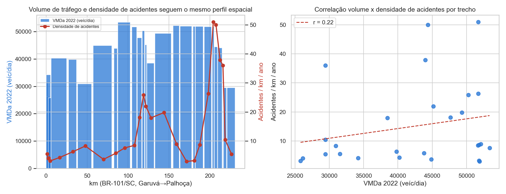
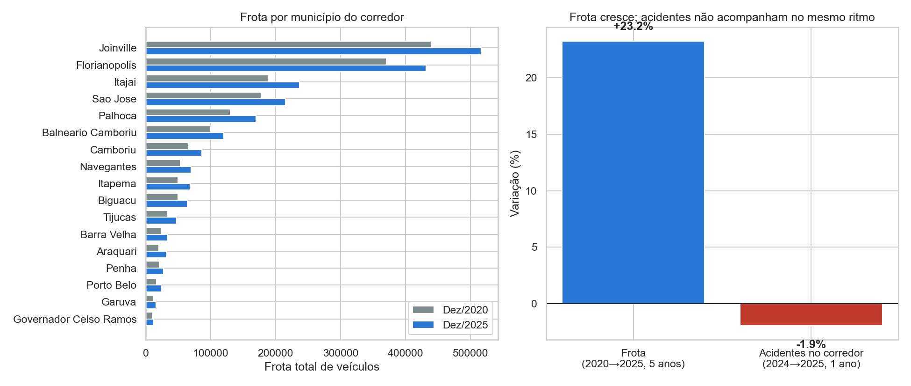
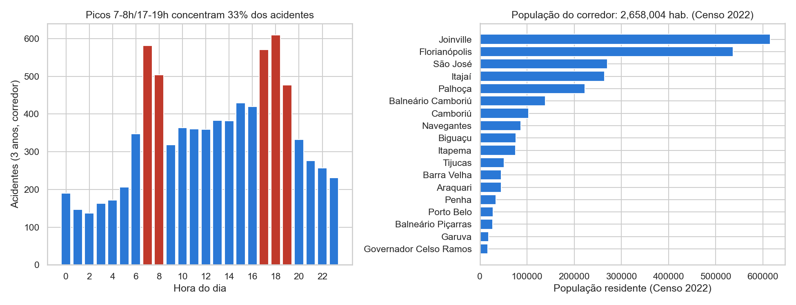
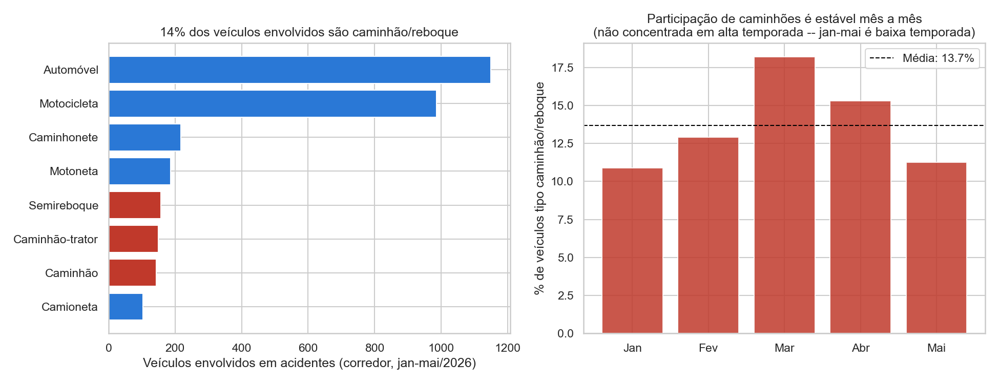
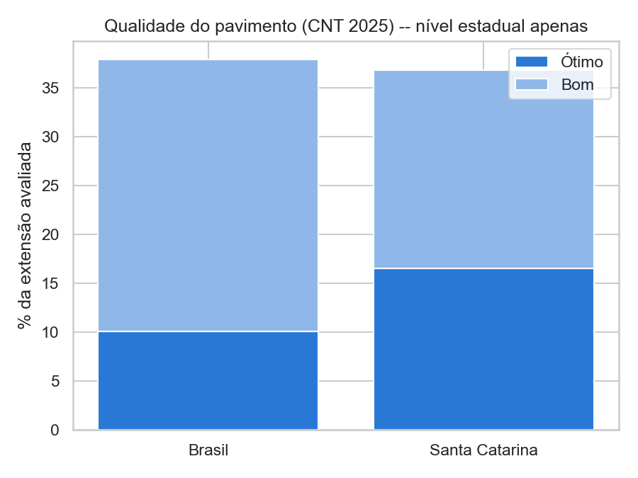

Análise exploratória · Dados PRF (2024–2026)
Levantamento da estrutura das bases de acidentes da Polícia Rodoviária Federal, com foco no corredor que a futura rodovia ViaMar (Joinville–Florianópolis) deve impactar, e um plano passo a passo para o estudo de impacto. Inclui 2024 e 2025 completos, além de 2026 parcial (jan–mai), para checar se o padrão se sustenta ao longo do tempo.
Cinco arquivos abertos da PRF, cobrindo três anos e duas granularidades diferentes.
| Arquivo | Granularidade | Linhas | Período | Observação |
|---|---|---|---|---|
| datatran2024.csv | 1 linha = 1 acidente | 73.156 | 01/01–31/12/2024 | Ano completo |
| datatran2025.csv | 1 linha = 1 acidente | 72.529 | 01/01–31/12/2025 | Ano completo |
| datatran2026.csv | 1 linha = 1 acidente | 29.774 | 01/01–31/05/2026 | Parcial (5 meses) — usado anualizado nas comparações por ano |
| acidentes2026.csv | 1 linha = 1 pessoa envolvida | 80.873 | 01/01–31/05/2026 | Detalhe por pessoa/veículo — só existe para 2026 |
| acidentes2026_todas_causas_tipos.csv | 1 linha = 1 causa/tipo por envolvido | 249.250 | 01/01–31/05/2026 | Multicausalidade — só existe para 2026 |
A BR-101 é, isoladamente, a rodovia federal com mais acidentes registrados no país — e Santa Catarina é o estado que mais concentra ocorrências dentro dela.
Top 10 BRs, 2024–2026 (2026 parcial)
SC concentra mais acidentes na BR-101 do que qualquer outro estado
Definindo o corredor como os municípios de Garuvá a Palhoça (km 0 a ~215 da BR-101/SC) — o trajeto que a ViaMar deve substituir/complementar.
Km 0 = divisa PR/SC (Garuvá) · Km ~215 = acesso a Florianópolis (São José/Palhoça)
2024–2026 (2026 parcial) · ordenado por volume
Acidentes no corredor por ano e sazonalidade mensal — para checar se o problema é estrutural (se repete ano após ano) ou uma oscilação de um único período.
2026 é parcial (jan–mai); contorno tracejado = valor anualizado
2024 + 2025 (anos completos, sem viés do parcial de 2026)
Picos às 7–8h e 17–19h: perfil de deslocamento pendular, não só turístico
Sexta e fim de semana concentram mais ocorrências
Sequência sugerida para transformar este diagnóstico em uma avaliação de impacto robusta do novo eixo Joinville–Florianópolis.
Estende o diagnóstico acima cruzando os mesmos acidentes (2024–2026) com volume de tráfego (DNIT),
frota de veículos (SENATRAN), perfil horário + população residente (Censo 2022), tipo de veículo envolvido e
qualidade do pavimento (CNT 2025) — para checar se a saturação do corredor é estrutural (tráfego, frota,
pendularidade) ou melhor explicada por turismo de verão. Metodologia e código completos em
analysis/analise_viamar.ipynb.
VMDa 2022 por trecho de km (barras) e densidade de acidentes/km/ano (linha) · correlação e nível de serviço

O volume médio diário (VMDa) no corredor é, em média, ~42.000 veículos/dia tanto em 2020 quanto em 2022 (-1,0% em 2 anos — outro platô, como os próprios acidentes), com picos acima de 50.000 veíc/dia entre Balneário Camboriú–Tijucas e no acesso a Florianópolis (km ~193–210). Mais revelador: o próprio DNIT já classificava, em dezembro/2020, 8 de 30 trechos monitorados (quase contínuos entre o km 87 e o km 209 — cobrindo o hotspot Itajaí–Balneário Camboriú–Itapema e parte do acesso à Grande Florianópolis) em Nível de Serviço D (fluxo próximo da instabilidade/capacidade) — um indicador direto de engenharia de tráfego, de fonte oficial, registrado há pelo menos 5 anos.
Frota por município do corredor, dez/2020 vs dez/2025, e comparação de variação (%) frota x acidentes

A frota nos 18 municípios do corredor cresceu de 1.760.274 (dez/2020) para 2.169.015 (dez/2025) — +23,2% em 5 anos (SENATRAN). No único período recente com dado de acidentes comparável (2024→2025, 1 ano), os acidentes no corredor caíram 1,9% (3.418 → 3.352).
Distribuição horária de acidentes e população residente por município (Censo 2022, IBGE/SIDRA)

33,4% dos acidentes do corredor ocorrem nas 5 horas de pico de deslocamento casa-trabalho (7–8h e 17–19h) — que representam apenas 20,8% do dia. Os 18 municípios do corredor somam 2.658.004 habitantes (Censo 2022) — Joinville e Florianópolis sozinhas somam mais de 1 milhão.
dados/README.md). O argumento "é pendularidade, não só turismo" aqui se apoia em proxies (horário de pico + população residente), não em fluxo origem-destino direto entre os municípios do corredor.Veículos envolvidos em acidentes no corredor e participação de caminhão/reboque por mês, jan–mai/2026

Em 2026 (jan–mai, baixa temporada), 13,7% dos veículos envolvidos em acidentes no corredor são caminhão/caminhão-trator/semirreboque — atrás de automóvel e motocicleta. A participação é relativamente estável mês a mês (10,9% a 18,2%), sem queda acentuada — mas o período analisado é todo de baixa temporada, então não há como comparar diretamente com dezembro/janeiro de alta temporada com os dados atuais.
dados.gov.br retornou 401). Tonelagens por porto catarinense citadas no diagnóstico (São Francisco do Sul ~4,2 Mt/ano, Itapoá ~4,0 Mt/ano, Portonave ~2,5 Mt/ano, Imbituba ~1,7 Mt/ano, Itajaí ~0,9 Mt/ano) vêm de notícias oficiais ANTAQ/SPAF-SC, não de série histórica bruta, e não entraram em nenhum cálculo — são contexto, não evidência quantitativa.Percentual da malha avaliada como ótimo/bom, Brasil x Santa Catarina

Pela Pesquisa CNT de Rodovias 2025, Santa Catarina tem 16,5% da malha avaliada como "ótimo" e mais 20,3% como "bom" (36,8% ótimo+bom) contra 10,1% ótimo e 27,8% bom no Brasil (37,9% ótimo+bom) — SC está essencialmente na média nacional, levemente atrás.
Os dados coletados sustentam moderadamente a tese de saturação estrutural de capacidade, com ressalvas relevantes que qualquer EIA/RIMA precisará endereçar.